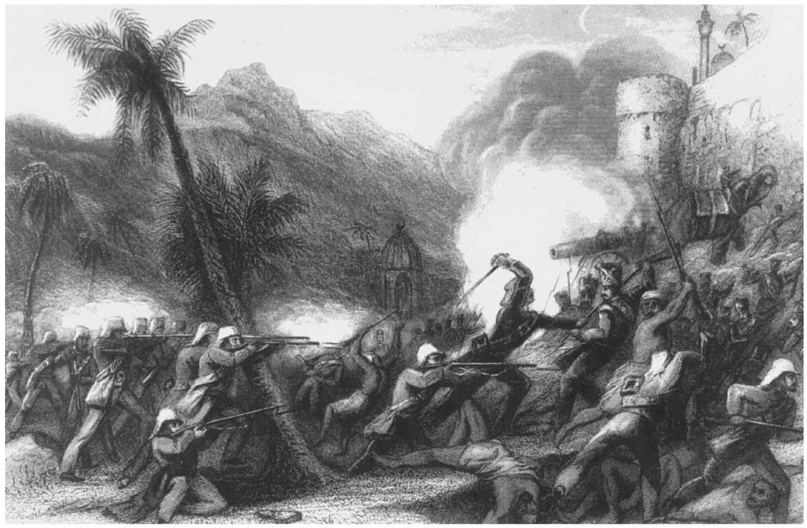

由于19世纪末欧洲的政治、经济和文化居于优势地位，欧洲人自然会这样认为：他们的卓越地位起因于其文明的优越性，而这又反映出他们作为一个种族的优越性。他们深信，上帝创造了不同的人，将白人造得更聪明，所以白人能指挥劳动，能指导宽背、低能的劣等种族的发展。因而也就有了“白人的负担”这一概念——这种说教用恪尽职守的理想主义罩衣遮盖当时的帝国主义。19世纪末（1899年），拉迪亚德·吉卜林在其著名的短诗中恰如其分地写道：
承担起白人的负担——
将你们培育的最好的东西传播开来——
让你们的子弟离家远去
去满足你们的俘虏的需要……[2]
鉴于1899年一位英国诗人充满自信地写了“白人的负担”，1992年，一位杰出的英国历史学家巴西尔·戴维森写了一本叫《黑人的负担》的书。他是在指欧洲人强加给殖民地人民、但已被证明是不切实际的一些制度和惯例——这个“负担”是黑人的，而不是白人的。
与今天的反省态度相反，在吉卜林的时代，欧洲人几乎被认为是神定的统治者。在印度，他们被恭敬地称为“大人”（sahib），在中东被称为“先生”（effendi），在非洲被称为“老爷”（bwana），在拉丁美洲则被称为“恩主”（patron）。在这种情况下，欧洲人开始用近视的眼光、用今天看来是不可思议的自我中心的观点去观察世界，也就不足为奇了。美国的态度也一样。西奥多·罗斯福总统在1904年致国会的一份咨文中告诫拉丁美洲说：“……长期的错误行为，或者说一种导致文明社会的关系全面松懈的软弱无能，在美洲同在其他地方一样，最终可能需要由某一文明国家来予以干涉。”[3]同样，1904年，美国一位传教士、著名出版家的父亲亨利·W.卢斯也从中国报道说：那里的条件对他们的活动很有利，“我们可以一起为上帝、为中国、为耶鲁工作”[4]。最令人吃惊的还是塞西尔·罗德斯的极度自信和好战心理，他走在时代的前面，梦想征服其他星球。
这个世界几乎已瓜分完毕，它所剩余的地区也正在被切割、被征服、被殖民。想一想你在夜空中所看到的那些星球吧，那些我们永远无法到达的巨大世界吧！我常常这样想，如果可能的话，我将吞并这些星球。看到它们这样清楚而又那么遥远，真使我感到悲伤。[5]
塞西尔·罗德斯看起来似乎过于自信，但这是一种牢固地建立在西方技术优势基础上的自信。西方的技术继续以加速度发展，所以，当今商业领域的罗德斯后继者们甚至更加自信。花旗公司前董事长乔治·摩尔在1987年指出，在25年内，世界将由一小撮大金融机构统治，它们将在宇宙空间站设立总部，以避开政府的管制。罗德斯因无法到达这些星球而感到悲伤，但是，他的后继者现在则认为，这些星球不但可以到达，而且将成为他们的私人发射台。

图244 1857年的印度兵变是较弱的社会受到较强且好战的社会威胁时用退却和逃避予以反应的例子。